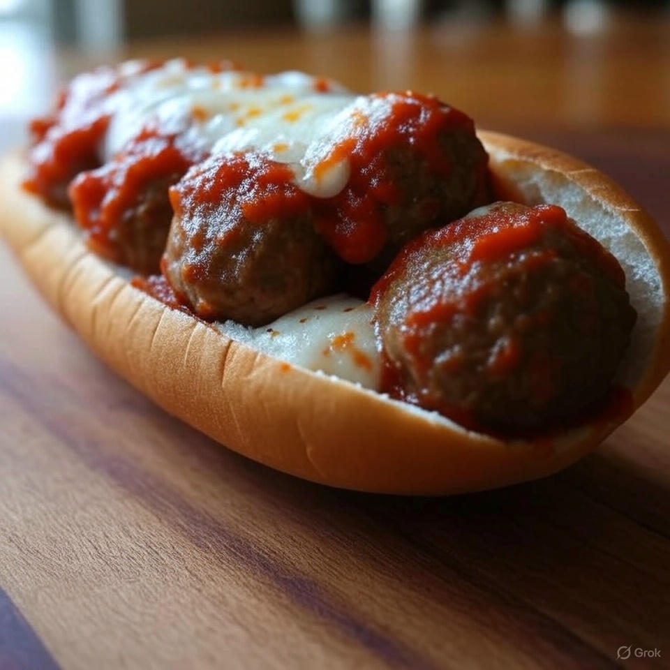
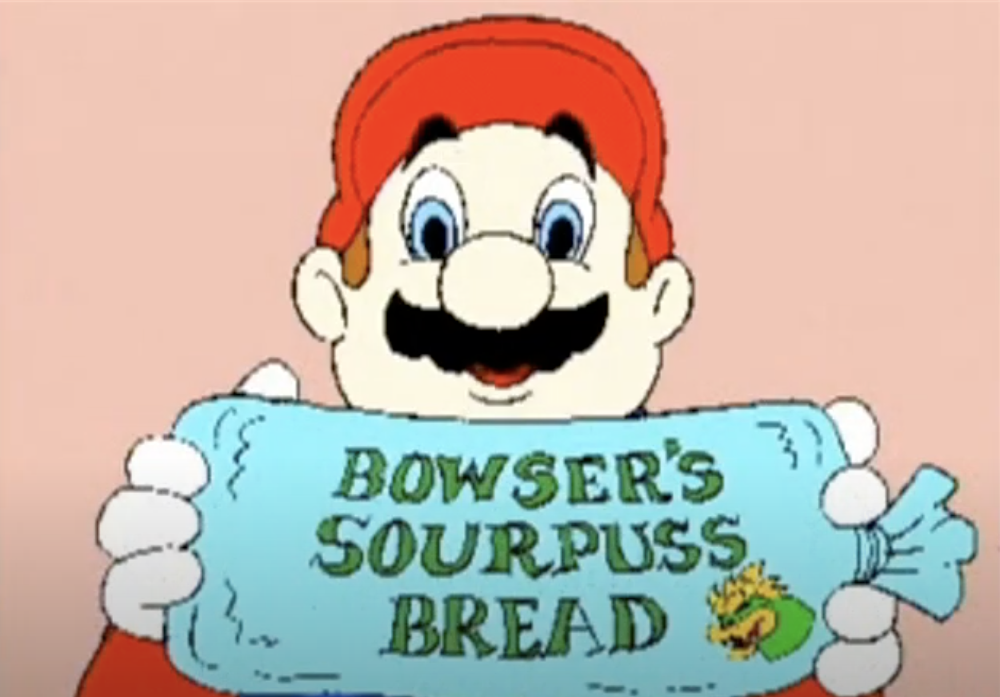

Home
Meatball Sub


Description
A delicious and easy meatball sub featuring tender meatballs (store-bought or hand-rolled with high-protein, lean beef), smothered in Rao's tomato marinara sauce, and topped with melted mozzarella cheese. Toasted to perfection, this sub is a quick and hearty meal.
Ingredients
- Rao's tomato marinara sauce
- Mozzarella cheese
- Sub bread roll
- Frozen meatballs (or high-protein, lean beef for hand-rolled meatballs)
Steps
- Prepare the meatballs: Use store-bought frozen meatballs or hand-roll your own with high-protein, lean beef.
- If making fresh meatballs, bake them according to package instructions or until fully cooked.
- Place the cooked meatballs in the sub bread roll and pour Rao's tomato marinara sauce over them.
- Sprinkle mozzarella cheese on top and toast the sub in a toaster oven until the cheese is melted, crispy, and browned.
- Serve hot and enjoy!